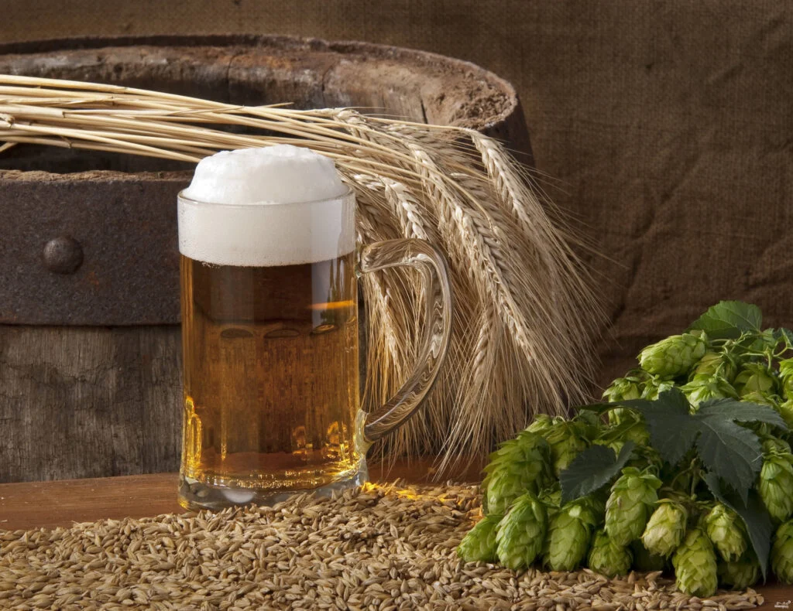

ДАЙДЖЕСТ / BODREEVSHOW
Пшеничное пиво

Пшеничное пиво: секреты мягкого вкуса и пышной пены
Любите освежающий вкус пшеничного пива с кремовой пенкой? Хотите попробовать сварить его самостоятельно? В этой статье мы раскроем все секреты приготовления домашнего пшеничного пива с идеальным балансом мягкости вкуса и пышности пены.
Особенности пшеничного пива
Пшеничное пиво — это не просто напиток, а целое искусство. Его отличают:
лёгкая текстура;
фруктовые ноты;
кремовая текстура;
умеренная крепость;
небольшая горечь;
сильная газированность .
Исторически этот сорт был доступен лишь баварскому королевскому двору, но сегодня каждый может создать свой уникальный рецепт дома.
Ингредиенты: основа идеального напитка
Ключевой ингредиент — пшеничный солод . Именно он придаёт пиву лёгкость и фруктовые оттенки. Для баланса часто добавляют ячменный солод — он служит источником сахаров для ферментации и добавляет глубину вкуса.
Другие важные компоненты:
Хмель — задаёт горечь и аромат (для пшеничного пива выбирают более мягкие сорта).
Дрожжи — выбирайте специальные дрожжи для пшеничного пива (они обеспечивают характерный вкус и аромат).
Вода — используйте фильтрованную или бутилированную воду для лучшего результата.
Сахар или мёд (по желанию) — для корректировки сладости.
Шаг за шагом: процесс приготовления
Подготовка ингредиентов
подсушите пшеницу на большой сковороде;
растолките её ступкой;
подготовьте ёмкости для затирания и брожения.
Затирание
залейте 1,5 кг пшеницы 7 литрами воды (температура около 65 °C);
настаивайте 3 часа, затем слейте воду;
залейте ещё 7 литрами горячей воды, настаивайте 2 часа, снова слейте;
завершающий этап — заливка 5 литрами холодной воды на 1,5 часа .
Варка сусла
объедините все слитые жидкости;
добавьте 100 г. хмеля и 3 кг сахара;
кипятите несколько минут, постоянно помешивая.
Охлаждение и брожение
охладите сусло до тёплой температуры (не горячей!);
добавьте 1 стакан разведённых дрожжей;
оставьте для брожения при комнатной температуре на 5–6 дней.
Фильтрация и розлив
после прекращения активного брожения процедите пиво;
разлейте по бутылкам, плотно закройте;
уберите в холодильник на 2 недели для созревания.
Секреты мягкого вкуса
Чтобы пшеничное пиво получилось особенно мягким, учитывайте следующие нюансы:
Используйте качественные ингредиенты — свежесть солода и хмеля напрямую влияет на вкус.
Контролируйте температуру затирания — слишком высокая температура может придать горечь.
Добавьте немного мёда на этапе варки для лёгкой сладости (не более 100 г. на 20 литров сусла).
Дайте пиву время на созревание — минимум 2 недели в холодильнике позволят вкусу раскрыться.
Избегайте избыточного хмеля — пшеничное пиво ценится за фруктово-цветочный профиль, а не за горечь.
Как добиться пышной пены
Пышная пена — визитная карточка пшеничного пива. Вот как её достичь:
Оптимальная карбонизация — чем выше содержание растворённой углекислоты, тем пышнее пена. Но важно не переборщить, иначе пена будет нестабильной.
Правильная схема затирания — избегайте длительных пауз при температуре ниже 60 °C (особенно 45–55 °C), чтобы не расщеплять белки, формирующие пену.
Короткие белковые паузы — помогут сохранить устойчивость пены без помутнения пива.
Качество дрожжей — специальные дрожжи для пшеничного пива способствуют образованию плотной пенной шапки.
Правильное наливание — наклоните бокал под углом 45° при розливе, затем постепенно выпрямляйте. Это обеспечит максимальную пенность.
Распространённые ошибки и как их избежать
Горький вкус — следствие избытка хмеля или слишком высокой температуры затирания. Решение: уменьшите количество хмеля, контролируйте температуру.
Слабая пена — может быть вызвана недостаточной карбонизацией или неправильным затиранием. Решение: скорректируйте уровень углекислоты, соблюдайте температурный режим.
Помутнение — часто связано с избытком белков или недостаточным созреванием. Решение: используйте короткие белковые паузы, дайте пиву больше времени на созревание.
Невыраженный вкус — может быть из‑за некачественного солода или недостаточного времени брожения. Решение: выбирайте свежие ингредиенты, увеличите время брожения.
Дополнительные советы
Экспериментируйте с пропорциями — добавляйте разные виды солода, чтобы найти свой идеальный баланс.
Используйте специальные добавки (например, кориандр, корiандр, апельсиновую цедру) для уникального аромата (добавляются на этапе варки).
Ведите журнал пивовара — записывайте все параметры (температуру, время, количество ингредиентов) для последующего анализа и улучшения рецепта.
Тестируйте на малых партиях — прежде чем варить большую партию, протестируйте рецепт в уменьшенном масштабе.
Заключение
Приготовление пшеничного пива дома — увлекательный процесс, требующий внимания к деталям, но результат того стоит. Следуя нашим советам, вы сможете создать напиток с идеальным сочетанием мягкого вкуса и пышной пены, который порадует вас и ваших близких. Не бойтесь экспериментировать и находить свои уникальные рецептуры — ведь именно в этом вся прелесть домашнего пивоварения!